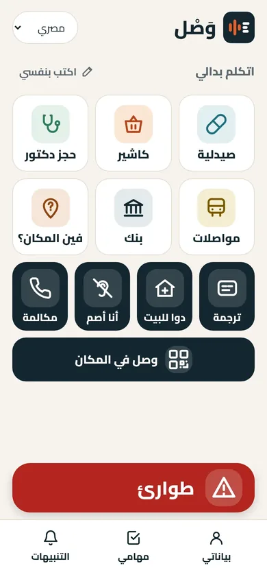
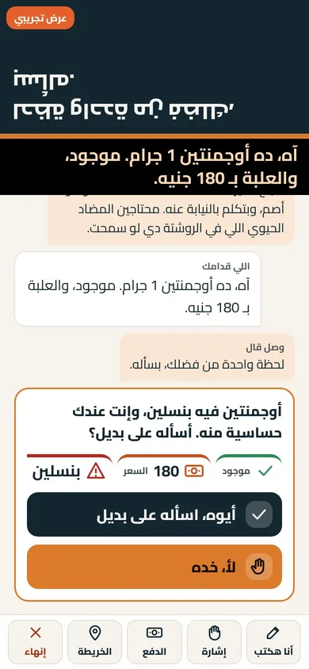
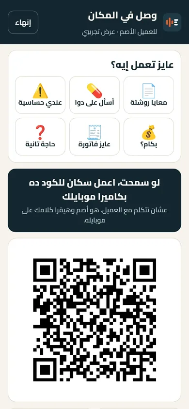
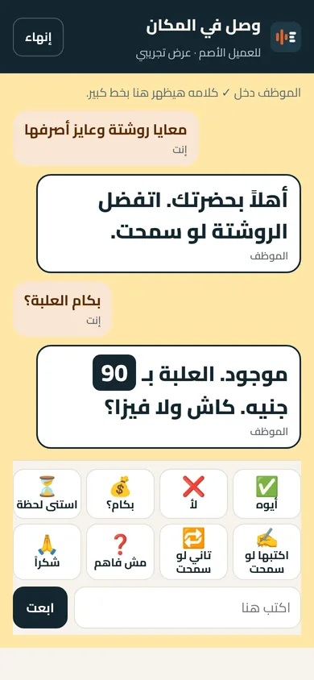
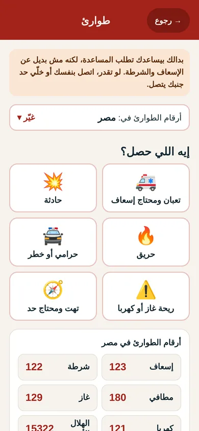

بدالك Badalak
تجريبي«احنا مش مترجم، احنا بنخلّص المصلحة.»
تطبيق ويب مجاني للصم وضعاف السمع
بدالك تطبيق ويب مجاني للصم وضعاف السمع في مصر، يفتح من متصفح الهاتف دون تحميل. يتكلم بالنيابة عن المستخدم بصوت مصري واضح، ويعرض كلام الطرف الآخر مكتوبًا ومعه صور بسيطة. يعمل في الصيدلية وعند الطبيب وأمام الكاشير وعلى واتساب، وكل قرار فيه مال أو صحة يرجع للمستخدم.





- وجهًا لوجه: تكتب أو تختار بالصور ما تريده، وبدالك يقوله بصوت للشخص السامع. وكلامه يظهر لك مكتوبًا ومعه كروت (السعر، موجود أم لا، الجرعة).
- قراءة صورة: صوّر الروشتة أو أي ورقة ليقرأها بدالك.
- الأمان: يراجع حساسية الأدوية المحفوظة قبل أي طلب دواء، وأي قرار فيه مال أو صحة يُعرض عليك باختيارات واضحة.
- دواء على واتساب: يكتب طلب الدواء لترسله من واتساب الخاص بك، ويحوّل رد الصيدلية الصوتي إلى نص وكروت.
- «وصل في المكان»: ملصقا QR لكل فرع: واحد للعميل وواحد لهاتف الفرع. تختار طلبك بالصور، فيرنّ هاتف الفرع ويهتز ويفتح المحادثة. وفيه وضع «هاتف واحد» إن لم يكن مع الموظف هاتف.
- طوارئ: صفارة وكشاف لتنبيه من حولك، وإرسال مكانك للأهل، وجمل جاهزة للإسعاف والشرطة.
- تنبيهات الأصوات: يهتز الهاتف عند جرس الباب أو بكاء طفل أو إنذار حريق.
- وضع الصور: أيقونات كبيرة وكلام قليل لمن قراءته محدودة.
- إشارة: تعلّم بدالك إشاراتك الخاصة، والتعرّف يتم على هاتفك. ونعمل على مكتبة لغة الإشارة المصرية، وما زالت تُصوَّر وتُراجَع.
- «مكالمة (تجريبي)»: بدالك يتصل بدلًا منك، وتقرأ المكالمة مكتوبة وتجيب من هاتفك. تجريبية وغير مفتوحة للناس.
- يفتح من متصفح الهاتف دون تحميل
- مصري وخليجي وإنجليزي
- دون حساب، وبياناتك على هاتفك
- بلا إعلانات ولا بيع للبيانات
- العرض التجريبي يعمل دون إنترنت بعد أول فتح
مجاني للصم: 30 مهمة في الشهر لكل هاتف، وللشركات باقات. نحتاج 100 مجرّب في التجربة.
للشركات: القانون 10 لسنة 2018 يُلزم كل شركة بها 20 موظفًا أو أكثر بتشغيل 5% على الأقل من ذوي الإعاقة. بدالك يساعد الموظف الأصم على العمل والإنتاج، ويساعد الشركة على خدمة عملائها الصم دون مترجم.